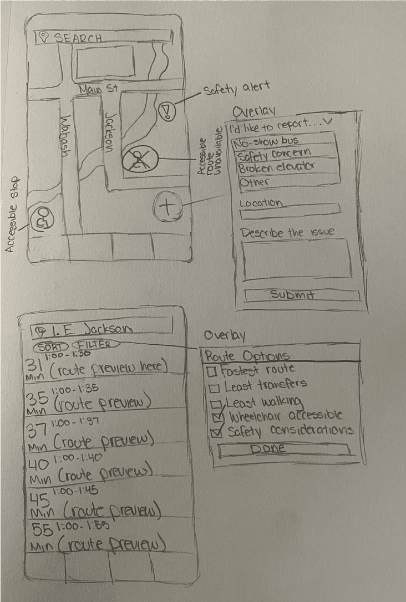

1. The Problem Space & Commuter Friction
The Chicago Transit Authority (CTA) system serves hundreds of thousands of daily riders across rail and bus networks. However, riders with disabilities—including wheelchair users, cane travelers, individuals with service animals, and parents with strollers—routinely experience critical breakdowns in trip certainty.
Elevated 'L' train stations present severe physical barriers when station elevators fail unexpectedly. When an elevator is out of service and not prominently communicated, a mobility-impaired commuter is effectively trapped on a platform or forced into unexpected, multi-mile detours. Additionally, erratic "ghost buses" (scheduled buses that never arrive) cause severe anxiety in harsh winter weather.
"Timely, location-specific status notifications are essential safety features, not conveniences. When an elevator goes out, my entire day is derailed unless I know beforehand."— Contextual Inquiry Participant, Chicago Commuter
2. Wireframe Sketches & Information Architecture
Our team broke down the core commuter journey into low-stress phases: route discovery, en-route monitoring, and disruption management. We sketched low-fidelity layouts to test whether elevator health indicators should live at the station level, the train line level, or inside individual trip itineraries.

Through iterative feedback, we established three primary design principles:
- Proactive Status Transparency: Display elevator outages directly on station badges before a rider enters the turnstile or boards a train.
- Alternative Accessible Routing: Automatically recalculate step-free detours if an elevator fails while the rider is en route.
- Non-Color Reliant Alerts: Ensure every warning pair utilizes iconography, high-contrast text labels, and haptic feedback rather than relying on red/green color coding alone.
3. Prototyping & High-Fidelity Design
The high-fidelity design system adheres strictly to WCAG 2.2 AAA standards. We prioritized 48x48px minimum touch targets, high-contrast typography, and intuitive mode toggles for bus vs. train transit.

Key system features include:
- Real-Time Elevator Health Feed: Direct integration with station telemetry to surface out-of-order statuses prominently with estimated repair windows.
- Ghost-Bus Verification: Vehicle tracking indicators that distinguish between scheduled timetable buses and live GPS-verified vehicles.
- Personalized Accessibility Profiles: Riders can set preferences for step-free access, wheelchair spaces, or high-contrast audio guidance as their default routing mode.